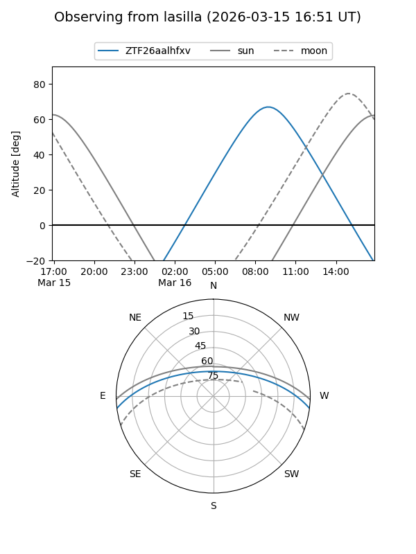
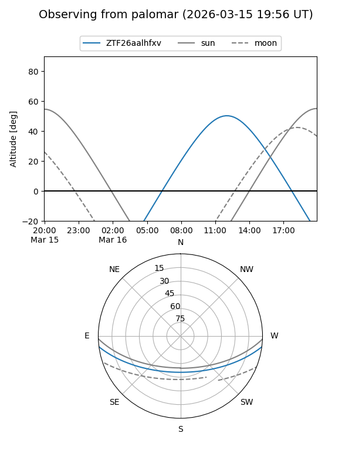

ZTF26aalhfxv
Target ZTF26aalhfxv at 2026-03-16 11:00
Aliases and brokers:
FINK: link
Lasair: link
ALeRCE: link
alt names
ZTF26aalhfxv (ztf,fink_ztf)
Coordinates:
equatorial (ra, dec) = 237.3501,-6.22561
equatorial (HMS+DMS) = 15:49:24.02,-06:13:32.21
galactic (l, b) = (1.8545,+35.56976)
Flags:
Photometry:
last ztfg=19.03
1 ztfg detections
Lightcurve
Visibility


Additional plots